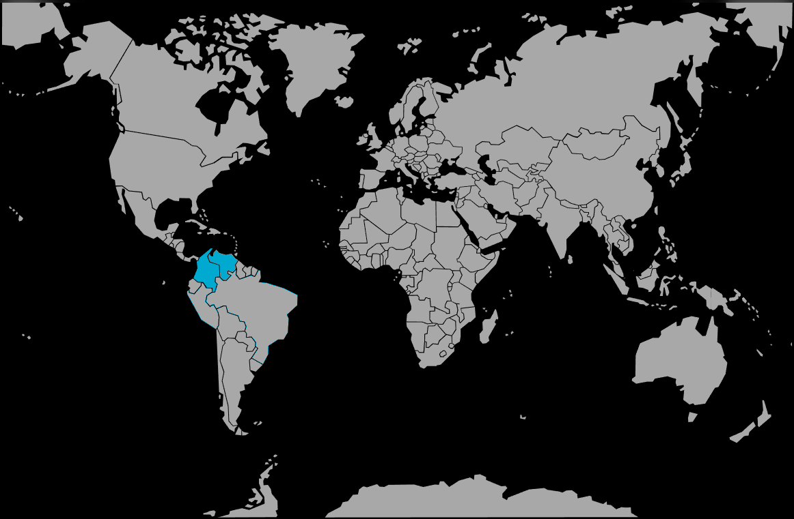

Systématique
- Ordre : Cichliformes
- Famille : Cichlidae
- Genre : Astronotus
- Espèce : Astronotus mikoljii
Astronotus mikoljii est un grand cichlidé sud‑américain décrit récemment, appartenant au groupe des « oscars » et caractérisé par une répartition centrée sur les bassins de l’Orénoque et du golfe de Paria.
Les adultes présentent un corps massif, une tête large et une livrée variable selon les populations, avec des ocelles et des marbrures sombres sur fond brun à verdâtre; en captivité, la taille se situe fréquemment entre 25 et 30 cm pour les mâles bien développés.
Poisson intelligent et observateur, Astronotus mikoljii interagit fortement avec son environnement et son soigneur, manipule le décor et fouille intensément le substrat; un agencement robuste et peu de décor fragile sont indispensables.
Le comportement est territorial, en particulier entre individus de taille proche; en aquarium, il occupe surtout le milieu et le bas du bac, alternant phases d’exploration et station près de ses repères comme les racines et les grosses pierres.
Mode : ovipare, pondeur sur substrat découvert; le couple nettoie une surface plane (pierre, racine, vitre) avant d’y déposer plusieurs centaines d’œufs, ensuite ventilés et gardés.
Soins parentaux : les deux parents protègent la ponte puis les larves, regroupent les alevins en nuage serré et défendent vigoureusement le territoire jusqu’à ce que les jeunes deviennent autonomes.
Dimorphisme sexuel : peu marqué; les mâles tendent à être légèrement plus grands, avec une tête plus massive et parfois un front plus bombé, mais le sexage fiable repose surtout sur l’observation de la papille génitale en période de reproduction.
Espérance de vie : comme les autres oscars, l’espèce peut dépasser 10 ans en captivité si le volume, la qualité de l’eau et l’alimentation sont adaptés.
Astronotus mikoljii habite des milieux variés : chenaux principaux, affluents à courant lent, lagunes et plaines inondables, dans des eaux blanches, claires ou noires selon les secteurs; la végétation rivulaire, les racines et les troncs immergés y sont fréquents.
Répartition
Origine naturelle :
- Bassins moyen et inférieur du fleuve Orénoque et zones reliées au golfe de Paria, principalement au Venezuela et dans l’est de la Colombie.
- Présent dans divers sous‑bassins : rivières principales, affluents forestiers, llanos inondables et petites lagunes connectées au réseau fluvial.
En aquarium, un décor de grosses racines, pierres stables et larges zones dégagées reproduit ces habitats, en laissant à la fois des postes d’observation et de l’espace de nage.
Paramètres de maintenance
Température : 24 à 30 °C, avec un optimum autour de 26–28 °C.
pH : 6,0 à 7,5, de légèrement acide à neutre, en évitant les variations brusques.
GH : 2 à 12 °dGH, eau douce à moyennement minéralisée.
Courant : faible à modéré; l’important est une filtration très performante et une bonne oxygénation pour gérer la forte charge organique d’un grand cichlidé.
Volume conseillé : au minimum 450–500 L pour un individu, davantage pour un couple ou la cohabitation avec d’autres grands poissons, afin de limiter la promiscuité et les conflits.
Régime alimentaire
Régime : omnivore à nette tendance carnivore; dans la nature, l’espèce consomme divers invertébrés, petits poissons, crustacés et débris organiques, complétés par des éléments végétaux.
En captivité, elle accepte sans difficulté granulés ou sticks pour grands cichlidés, complétés par des aliments congelés ou frais (moules, crevettes, morceaux de poisson, vers) et une part végétale modérée pour l’équilibre digestif.
Des rations variées, distribuées avec parcimonie et associées à des changements d’eau réguliers, sont indispensables pour maintenir une bonne santé et limiter la pollution du bac.